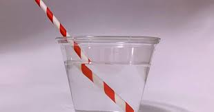

Refraction occurs due to a change in the speed of the light ray or wave. [1] The speed of light is greatest in a vacuum. When the light rays travel from a rarer to a denser medium, they bend towards the normal. If the light rays travel from a denser to a rarer medium, they bend away from the normal.